Frontend for Beginners
Building a React.js powered blog with automated code quality control
Context
Frontend for Beginners is a blog about front-end development, tailored to beginners. It is joint effort of the team of 4 people, and was in the active content and web development phase in May - June 2019. My roles in the project were developer and articles writer.
Overview
The goal was to build a blog about web development where different authors can add their articles in code and overall collaborate on enhancing the blog’s functionality.
It was achieved by using current technologies (React.js, Gatsby.js, Mocha testing engine) and collaborative tools (Github, CircleCI).
Blog preparation and development
Problem
When planning the blog, I wanted to build it with modern technologies, which are also easy to pick up by other developers who may be collaborating with me on the project. Also, I didn’t want to lock down into solutions that add much complexity from the very beginning. However, I also looked for basic blog functionality to be present as well, such as templates for the articles and automatic web pages generation for new articles.
Solution
The solution for the modern and easy to start collaborating blog was the Gatsby js framework. It leverages React.js and Webpack for frontend development, GraphQL query language for data management, and an extensive system of plugins.
To set up the blog, I performed the following steps:
- Generate a basic Gatsby.js project;
- Add main layout components: header, footer, column structure for the articles, code the about page;
-
Setup the templates for the blog post pages, set up an automatic generation of the new blog pages and new tags pages
- Group the articles into main website categories - articles and tutorials on the home page and respective articles and tutorials pages with Array.map() method;
-
Setup the template for the social sharing meta tags automatically generated for each blog page;
- Setup automatic deployment to Netlify; 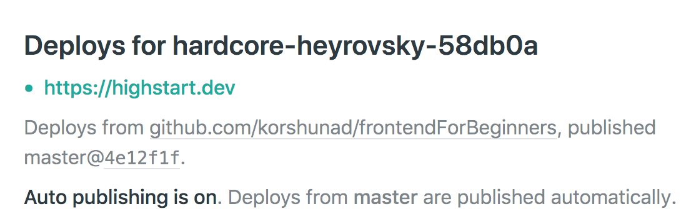 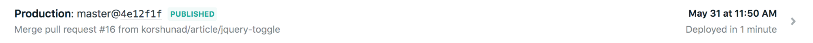
Code Quality
Problem 1: Linting code
Code quality revolves mainly about code readability and styling conventions used in the repository. In the case of this project, maintaining code quality is important both for myself and any other collaborators.
Commonly it is achieved by setting up linters, that highlight all the syntax errors and styling inconsistencies.
Solution 1: Linting code
One of the best linters for Javascript is JSLint. Gatsby already uses JSLint, but by default, it lints everything during the development process and does not restrict pushing poorly formatted code.
Running JSLint commands in the project as is checks the whole project’s codebase and may also automatically fix minor errors.
To check only the code that was changed and staged for the commit:
- I added the husky package that allows using git hooks, which may prevent the commits. I tested it to show the commit message when a commit is made and then configured to run lint-staged: 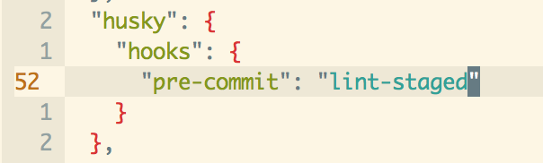
- Then I added the lint-staged package and configured it to lint only the committed code: 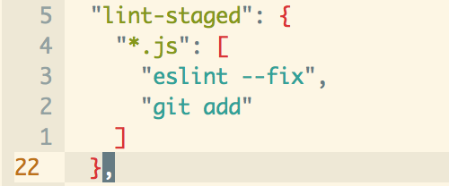
Problem 2: Linting commits
When committing the added or changed code, developers may use different conventions or no conventions at all. This may result in huge commits or small commits, which, most importantly, may be hard to debug by the author or teammates.
Therefore it is one of the best practices to structure the commits in the form of “
Solution 2: Linting commits
Forcing developers to remember the styling convention may make life just harder. Therefore I added “commit-lint” that checks the commit message to conform to the “
For that, I added another package “commit-lint” and configured the husky setup to check the text of the commit, additionally to checking the files being committed.
Commit-lint setup in the package.json:
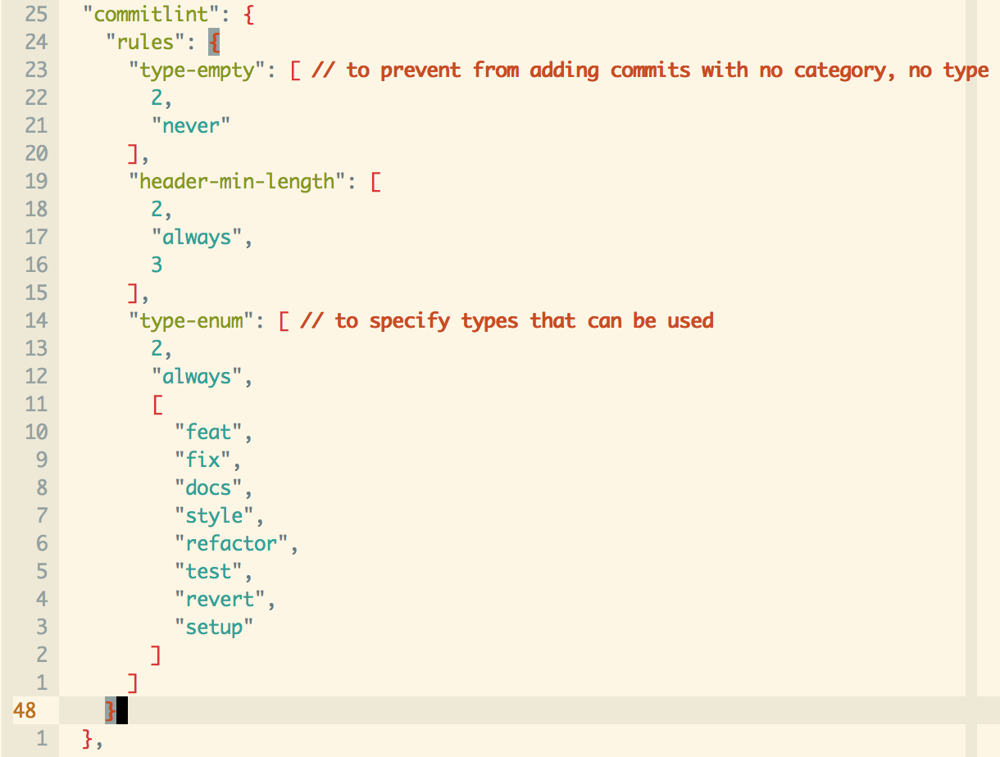New husky setup:
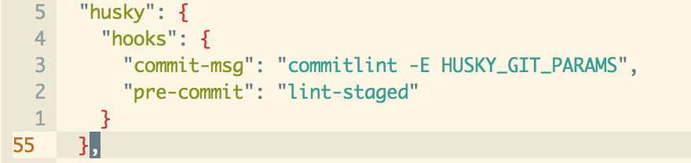After all the setup the commit checks looks like the following:
-
Commit staged files with a message:
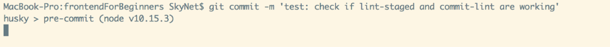 -
Linter runs and checks selected files:
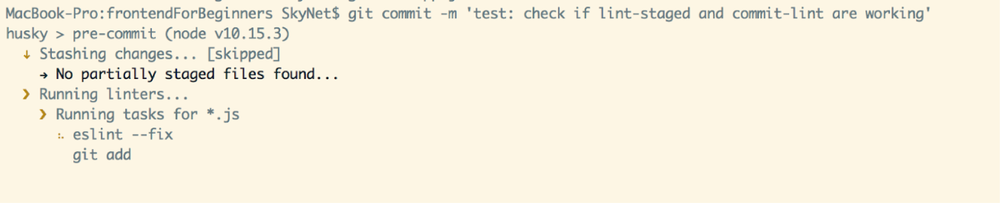 -
Commit-lint checks if the commit message is formatted properly:
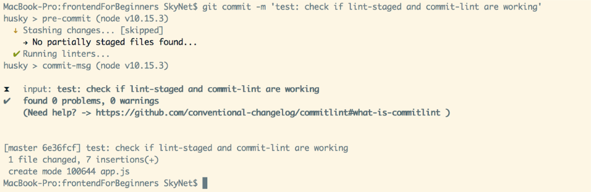 -
If formatting is off, commit-lint raises a warning:
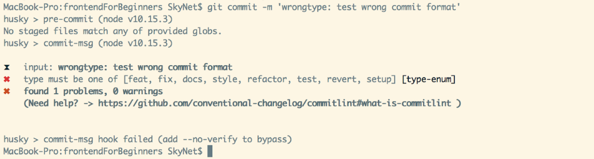
Automated Testing
Problem
Programming collaboratively is based on trust. Certainly, you are reviewing the teammate’s code in the pull request, and optionally even pull the branch they worked in to test changes locally. However, it is great to have the tests run automatically to see new changes do not break that main functionality.
Solution
The result I was approaching was the following: when a pull request is made to the master branch, the automated tests run to see whether existing pages are displayed correctly. This is done with 3 main components:
- CircleCi project setup that runs tests when a pull request is made to the master branch, and displays pass or fail flag on the pull request page;
- Mocha testing engine, that is used for writing the tests, ensuring the web pages contain correct content when loaded;
- Puppeteer, the Headless Chrome Node API that opens web pages in Chrome and gets their content
The steps to set up were the following:
- Setup the CircleCI project in the CircleCI project with the frontendForBeginners repository;
- Add the .circleci/config.yml configuration file and validate it with circleCI CLI. Validation was necessary as I ran into syntax errors when copying the config code into VIM code editor and the .yml whitespace syntax is pretty strict; 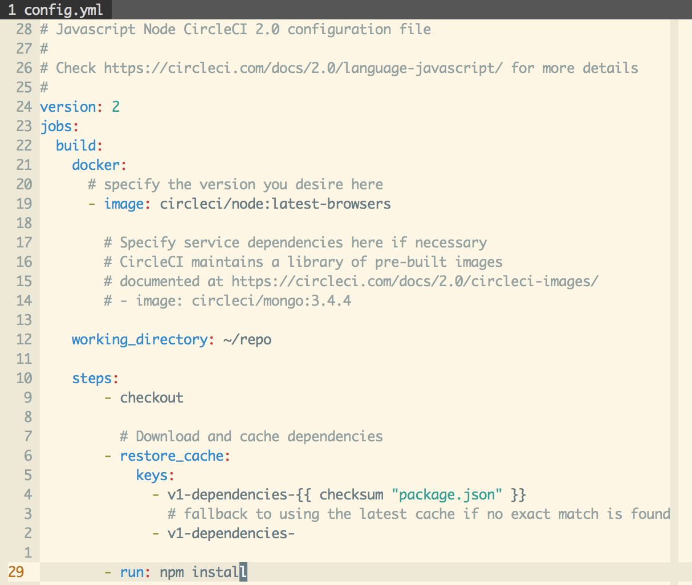
- Serve the built version of the blog (static website, build folder) with Express.js. 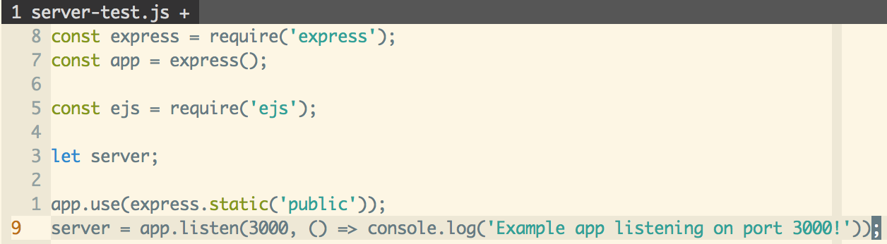
-
Write Mocha tests, that run the website on a local server and open the headless chrome instance, then get specific pages with Puppeteer and check if they contain the title element of the page.
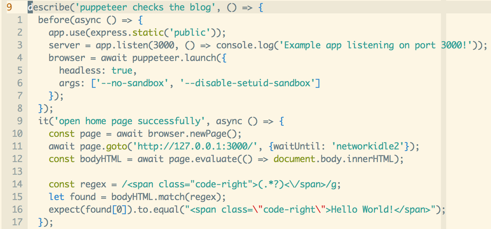
Close the chrome browser and server when the tests end
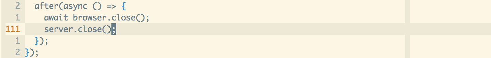 -
As the tests rely on the built version of the website, add the build and then test command to the .circleci/config.yml file

As a result, the pull request can be merged into master after the code review and after the CircleCI tests have passed
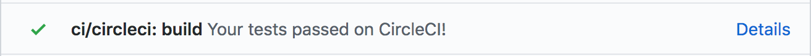And this is how the tests are passing
Collaboration
Problem
It may be hard to communicate the project structure and development process, as well as the code quality assurance measure.
Solution
Up-to-date documentation in the README.md file, which describes the folder structure and main commands used to run the development server and teste. It was tested and then improved with one of the collaborators.
Overall result
The extensible blog is written with React.js, leveraging rich Gatsby.js plugins ecosystem and documentation, ensuring code quality with linting and automated testing.